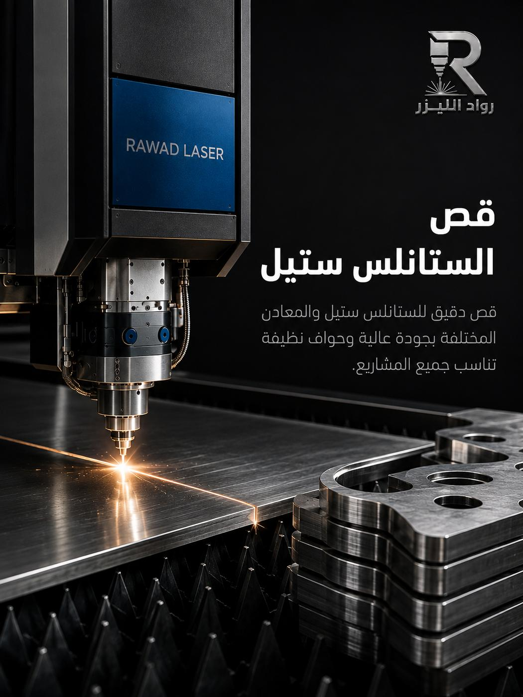

أسطح ورفوف وأحواض المطابخ
قطع الأسطح وفتحات الأحواض والمواقد بمقاسات المطبخ الفعلية، ثم تُثنى وتُلحم لتصبح وحدة كاملة.
تجهيزات المطاعم والمطابخالستانلس ستيل معدن لا يغفر الأخطاء: أي حرق أو تأكسد على الحافة يبقى ظاهراً للأبد. نقصّه بإعدادات وغاز مناسبين لتخرج الحافة نظيفة لامعة، جاهزة للتلميع أو التركيب مباشرة.

الستانلس ستيل يقاوم الصدأ بفضل طبقة أكسيد كروم رقيقة تتكوّن تلقائياً على سطحه. أي طريقة قص تسبّب حرارة زائدة أو تلوثاً بالحديد قد تُضعف هذه الطبقة في منطقة الحافة، فيظهر الصدأ لاحقاً عند نقطة القص بالذات — وهو أشهر عيب يشتكي منه العملاء في أعمال الستانلس الرخيصة.
الليزر يعمل بمنطقة تأثر حراري ضيقة جداً، ومع غاز خامل مناسب تخرج الحافة نظيفة بلا أكسدة سوداء وبلا تلوّث بأدوات حديدية. النتيجة قطعة تحافظ على مقاومتها للصدأ في الخدمة، وحافة لا تحتاج تجليخاً يفقدها لمعانها.
لهذا نستخدم الليزر في كل أعمال الستانلس التي تحتاج مظهراً نهائياً ظاهراً للعين: واجهات، تجهيزات مطاعم، أسطح عمل، لوحات، ودرابزين — حيث تكون الحافة نفسها جزءاً من المنتج لا شيئاً مخفياً.
قطع الأسطح وفتحات الأحواض والمواقد بمقاسات المطبخ الفعلية، ثم تُثنى وتُلحم لتصبح وحدة كاملة.
تجهيزات المطاعم والمطابخلوحات أسماء ومداخل وشعارات مقصوصة بحواف حادة، ويمكن دمجها مع الحفر بالفايبر لنقش النصوص.
قواعد أعمدة، ألواح تثبيت، وفواصل مقصوصة حسب مقاسات الموقع، ومصمّمة لتتحمّل الأحمال والاستخدام اليومي.
قطع بأسطح ملساء وحواف نظيفة يسهل تعقيمها، لأن أي خشونة أو شقّ يصبح موضعاً لتراكم البكتيريا.
قطع تعمل في بيئات رطبة أو كيميائية حيث يفشل الحديد المطلي بعد أشهر، فتُنفَّذ من الستانلس ابتداءً.
أرسل القطعة القديمة أو صورتها مع القياسات، ونقصّ لك بديلاً مطابقاً بالستانلس ليدوم أطول من الأصل.
اختيار الدرجة والتشطيب قبل القص يوفّر عليك تكلفة استبدال لاحقاً. هذا ما نعتمده في التوصية.
| الدرجة / التشطيب | الخصائص | الاستخدام الموصى به |
|---|---|---|
| 304 (18/8) | مقاومة جيدة للصدأ، قابل للثني واللحام، غير مغناطيسي في الغالب. | مطابخ، أثاث، ديكور داخلي، أسطح عمل، معدات عامة. |
| 316 / 316L | مقاومة أعلى للكلوريدات وللمواد الكيميائية بفضل الموليبدنوم. | الأجواء الساحلية، الحمّامات، المسابح، التطبيقات الكيميائية والطبية. |
| 430 | فيريتي مغناطيسي، نيكل أقل، سعر أوفر، مقاومة صدأ أقل من 304. | ألواح داخلية، أغطية، تطبيقات جافة لا تلامس ماءً باستمرار. |
| تشطيب 2B | سطح أملس نصف لامع، الأكثر توفراً وأقلها سعراً. | القطع التي ستُطلى أو تُخفى، أو حيث لا يهم المظهر النهائي. |
| مصقول / Brushed | خطوط تشطيب متجهة تخفي البصمات والخدوش الخفيفة. | الواجهات، تجهيزات المطاعم، اللوحات، وكل ما هو ظاهر للعميل. |
| مرايا / Mirror | سطح عاكس عالي اللمعان يبرز أي خدش أو بصمة بسهولة. | الديكور الفاخر واللوحات المميزة، مع فيلم حماية حتى التركيب. |
السماكات والدرجات المتاحة تختلف حسب الطلب وتوفّر المادة — أرسل المواصفة المطلوبة ونؤكد لك التوفر والسعر قبل البدء.

قص ستانلس ألواح 304
ألواح 304 تشطيب مصقول
تشطيب مصقولالصور نماذج وتصورات بصرية توضح إمكانيات الخدمة.
طاولات تحضير، أرفف، أغطية شفّاط، وواجهات كاونتر تتحمّل التنظيف اليومي بالمواد القوية.
عناصر معمارية ظاهرة يهم فيها التشطيب: فواصل، أغلفة أعمدة، وحروف مداخل.
قطع تعمل في بيئات رطبة أو غذائية تتطلّب معدناً لا يصدأ ولا يتفاعل مع المنتج.
لوحة منزل، هدية محفورة، أو قطعة واحدة بديلة — نقبلها دون حد أدنى للكمية.
من القص إلى الثني واللحام والتلميع حتى تصل الوحدة جاهزة للتركيب.
اذهب إلى الصفحةثني بزوايا مضبوطة مع مراعاة نصف قطر الثني حتى لا تتشقّق الحافة.
اذهب إلى الصفحةنقش دائم للأسماء والشعارات وأكواد QR بتباين واضح على السطح المصقول.
اذهب إلى الصفحةلا إذا نُفّذ القص بغاز مناسب وبإعدادات صحيحة، وإذا لم تتلوّث القطعة بأدوات حديدية بعد القص. نحرص على الأمرين، ونتعامل مع الستانلس بمعزل عن أعمال الحديد لتجنّب التلوّث بجزيئات الحديد.
للقطع الداخلية 304 كافٍ واقتصادي. لأي قطعة خارجية أو قريبة من البحر أو معرّضة لرطوبة عالية باستمرار نرشّح 316 لمقاومته الأعلى للكلوريدات — الفرق في السعر أقل بكثير من تكلفة استبدال قطعة تآكلت.
نعم، ويُفضّل أن يبقى فيلم الحماية على اللوح أثناء القص ثم يُزال عند التركيب. أخبرنا أن التشطيب ظاهر ومهم، ونتعامل مع القطعة على هذا الأساس في المناولة والتغليف.
نعم. نقبل القطعة الواحدة والطلبات الصغيرة بنفس دقة الطلبات الكبيرة، وهي من أكثر الطلبات التي تصلنا من الأفراد وأصحاب المحلات.
حدّد الدرجة (304 أو 316) والسماكة والتشطيب والكمية — أو اشرح الاستخدام ونرشدك للأنسب.
أرسل المخطط أو القياسات، ونعيد لك السعر وموعد التنفيذ في نفس يوم العمل غالباً.